Product Lifecycle Management
Community
This module helps to manage engineering change orders on products and bill of materials.
Features
ECO types are used to organize changes to product and bill of materials.
Create multi stages to identify the progress of ECO.
Add approvers to each stage.
Configure the verification stage to apply changes.
Tags are used in ECO for organization.
Created ECO are used to implement change versions made to product and bill of materials
Add ECO types, navigate to PLM → Configuration → ECO Types.
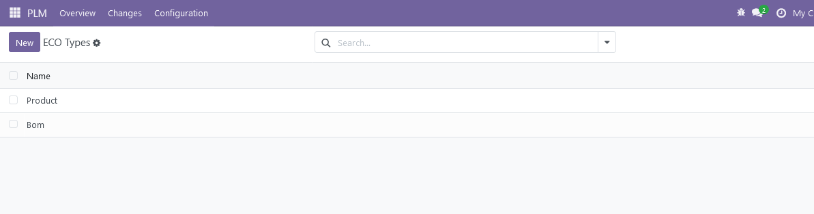
Configure ECO stages by going to PLM → Configuration → ECO Stages.
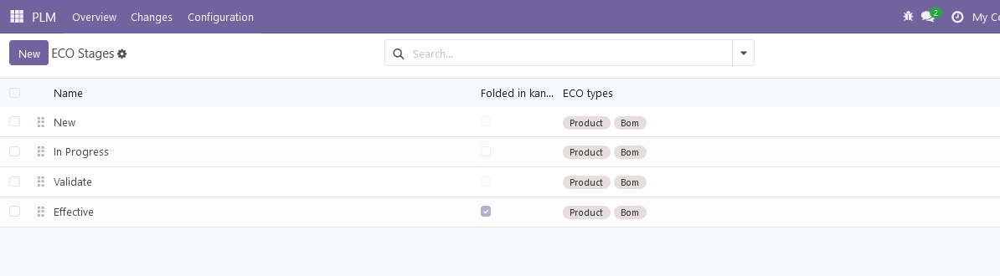
Choose ECO types which related to this stage
Add the approvers, by clicking Add a line, and specifying the Role of the reviewer, their User, and Approval Type
Configure the verification stage by checking the box of allow apply change
Choose the final stage by checking the box of final stage
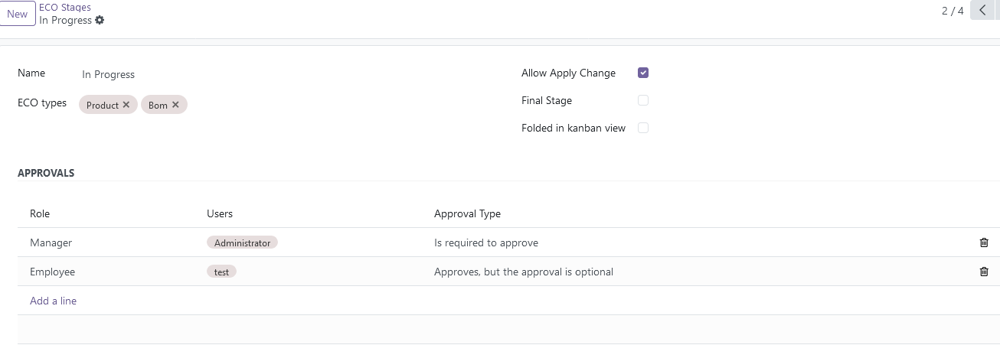
To create ECO, go to PLM → Changes
Add description, ECO type and apply type(Product/ BOM)
Select the product and BOM(if changes should be applied on BOM) or only product
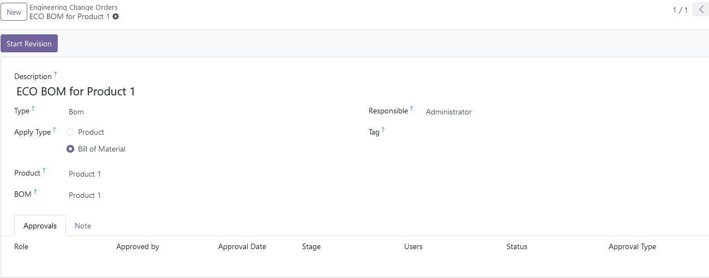
Start revision
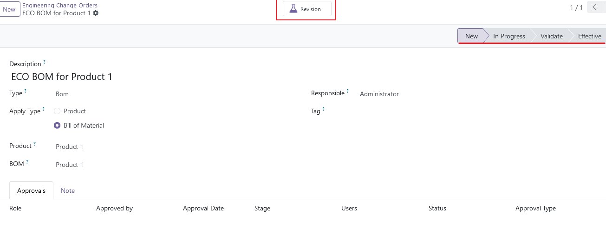
The stages of the ECO Type are displayed in the top-right corner of the ECO
A new BOM will be created(archived BOM with updated version number)
Open new BOM from revision smart button
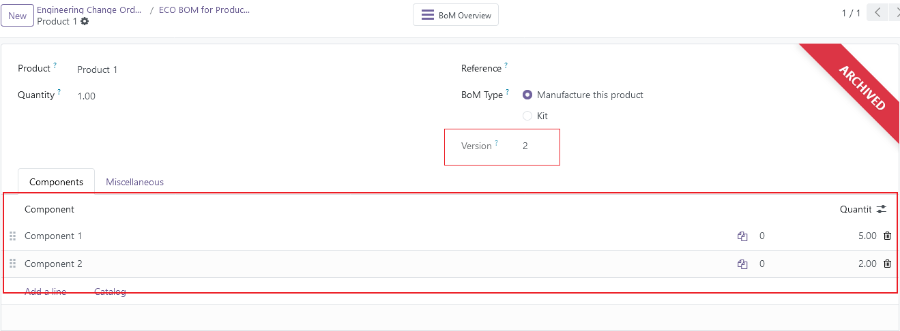
Update the new BOM's components
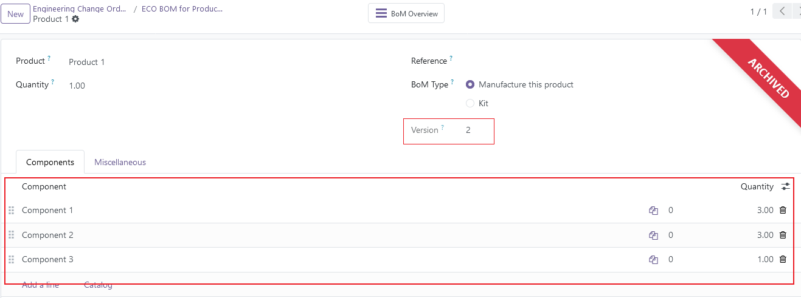
Apply Changes
Go back to ECO and press "Apply Changes"
Make sure all approvers have approved, otherwise this error will be raised
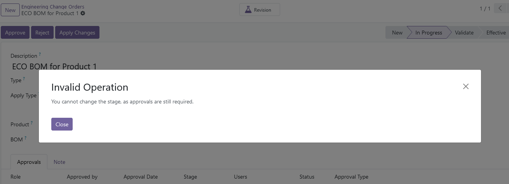
Approval is required to apply changes(if approval type in the approval lines "is required to approve")
Press "Approve", then "Apply Changes"
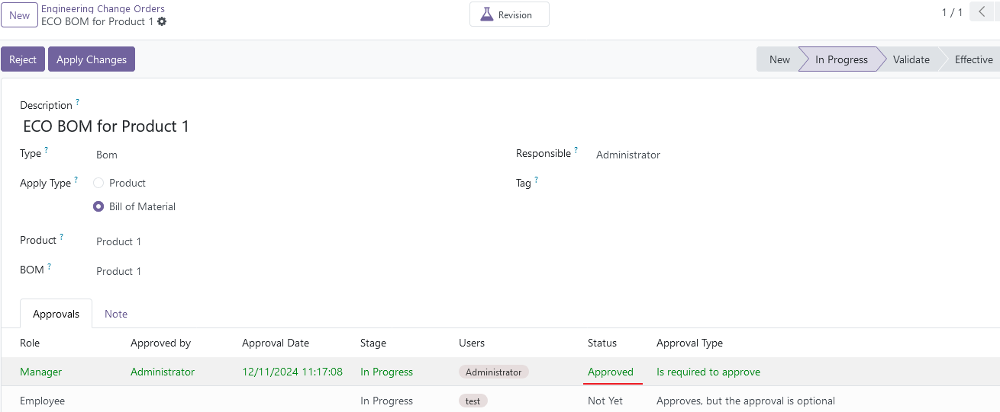
After apply changes, the ECO is automatically moved to a final stage
The old BOM will be archived
The new BOM become the new production BOM
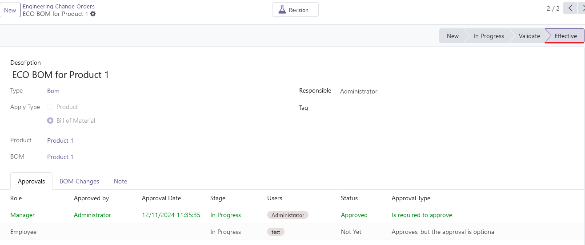
Verify Changes
From ECO click the Revision smart button, the archived flag is removed
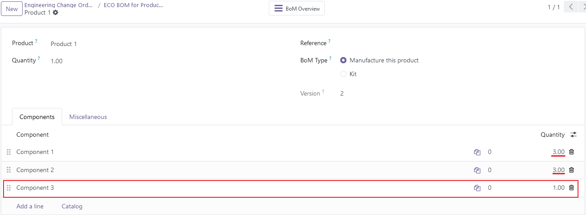
Open the old BOM, the archived flag is added
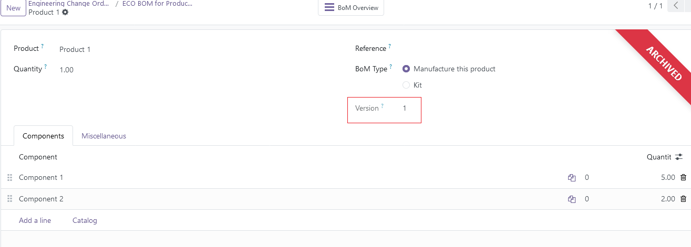
View changes in ECO
The amount of 'Component 1' has been reduced "From 5 → 3" - Update/Remove 2
The amount of 'Component 2' has been increased "From 2 → 3" - Update/Add 1
A new component 'Component' has been added with quantity "1" - Add 1
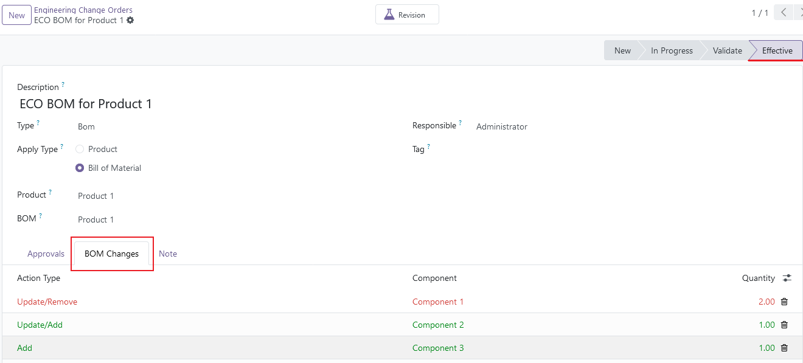
Overview section showing the number of current ECOs belonging to each type
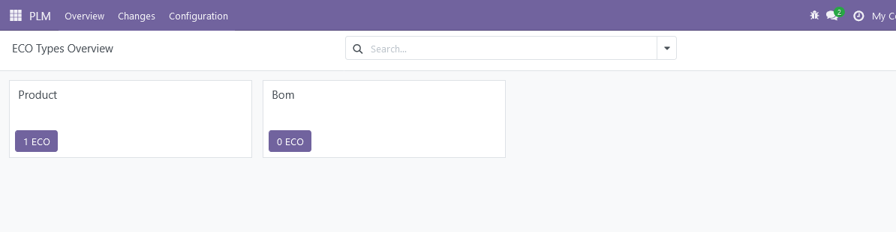
For more features or help, Please Contact us:
Email:
justtryforinfo@gmail.com